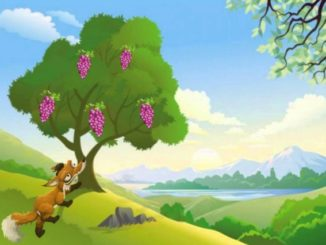
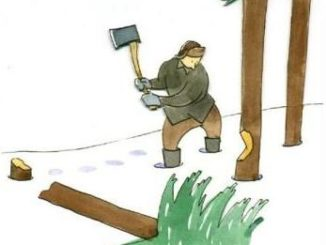
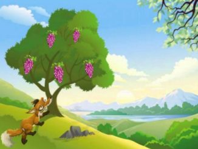
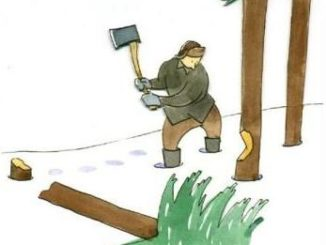

“Oh Father,” said a little Frog to the big one sitting by the side of a pool,
“I have seen such a terrible monster! It was as big as a mountain, with horns
on its head, and a long tail, and it had hoofs divided in two.”
“Tush, child, tush,” said the old Frog, “that was only Farmer White’s Ox.
It isn’t so big either, he may be a little bit taller than I, but I could
easily make myself quite as broad, just you see.” So he blew himself out,
and blew himself out, and blew himself out. “Was he as big as this?” asked he.
“Oh, much bigger than that,” said the young Frog
Again the old one blew himself out, and asked the young one if the Ox was as big as that.
“Bigger, father, bigger,” was the reply.
So the Frog took a deep breath, and blew and blew and blew, and swelled and swelled and swelled.
And then he said: “I’m sure the Ox is not as big as this. But at this moment he burst.
 


